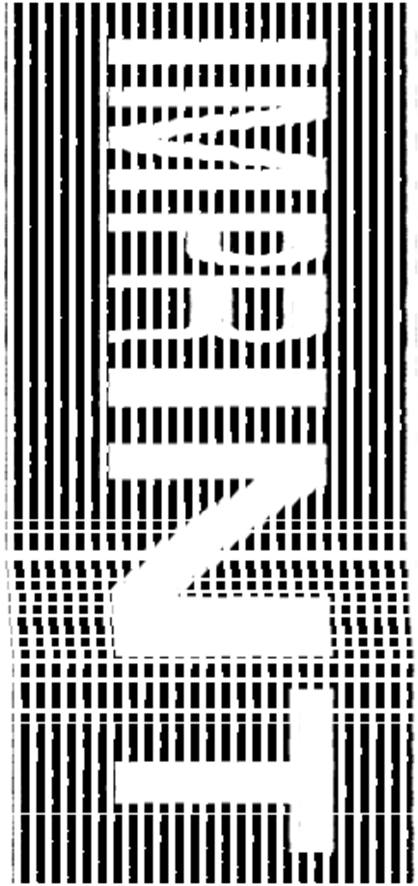

Imprint is an interactive tool for experimental typography which simulates industrial printing on various surfaces.
Imperfections and user input explore typography as a physical process.
© Meisner Florian Gestaltung